Chapitre C04 — Énergétique du solide
Énergie cinétique, inertie équivalente, puissance des actions mécaniques et des inter-efforts, théorème de l'énergie cinétique (TEC), rendement. Prérequis : C09 (comportement statique des transmetteurs). Source : S2I CM C04 — Énergétique du solide (11 p.) et S2I TD C04 (10 p.), tous deux image seule sur Moodle : le cours est retranscrit en texte et les énoncés des exercices sont en image.
Partie 1 — Cours
1. Historique, énergie, travail, puissance
L'énergie se conserve et se transforme (chaleur, pression, vitesse, hauteur…). Pour un système, l'énergie est ce qu'il faut lui fournir pour le faire passer d'un état initial à un état final : elle ne dépend pas du chemin. La puissance est le débit d'énergie à chaque instant ; elle dépend du mouvement.
Travail élémentaire d'une force : \(dW=\vec F\cdot d\vec\ell\) (en J). Pour un point matériel \(M\) de masse \(dm\) : \(W=\tfrac12\,dm\,V_{M\in S/R}^2\) entre deux instants (démonstration par le PFD).
2. Énergie cinétique d'un solide
Cas particuliers :
- \(A\) fixe dans \(R\) : \(2E_c=\vec\Omega\cdot\bar I_{(A,S)}\cdot\vec\Omega\).
- \(A=G\) : \(2E_c=m V_G^2+\vec\Omega\cdot\bar I_{(G,S)}\cdot\vec\Omega\).
- Translation : \(2E_c=m V_G^2\).
- Rotation autour d'un axe fixe \(\vec z\) : \(2E_c=J\omega^2\), avec \(J\) le moment d'inertie autour de \(\vec z\).
Ensemble de solides : \(E_{c(\Sigma/R)}=\sum_i E_{c(S_i/R)}\).
3. Inertie équivalente
Pour un système de pièces en rotation (et parfois en translation) à des vitesses différentes, on appelle inertie équivalente ramenée à l'axe \(\Delta\) l'inertie \(I_{eq\Delta}\) telle que \(2E_{c(\Sigma/R)}=I_{eq\Delta}\,\omega_\Delta^2\). Elle permet d'estimer rapidement le dimensionnement d'un actionneur.
4. Puissance d'une action extérieure
- Glisseur : \(P=\vec R\cdot\vec V_A\) ; couple : \(P=\vec C\cdot\vec\omega\).
- La puissance n'a de sens que par rapport à un repère : elle est nulle dans tout repère lié au solide sur lequel elle s'exerce.
5. Puissance des inter-efforts
- Si elle est négative, c'est une puissance perdue par frottement.
- Si la liaison entre \(S_1\) et \(S_2\) est parfaite, \(P_{S_1\leftrightarrow S_2}=0\).
6. Théorème de l'énergie cinétique (TEC)
Pour un ensemble \(E\) de \(n\) solides : \(\dfrac{d}{dt}\Big(\sum_i E_{c(S_i/R)}\Big)=\sum_i P_{\bar S_i\to S_i/R}\), soit \(\dfrac{dE_{c(E/R)}}{dt}=P_{\bar E\to E/R}+\sum_{i,j}P_{S_i\leftrightarrow S_j}\) : puissance des actions extérieures à chaque solide plus puissance des inter-efforts entre solides.
7. Notion de rendement
Une partie de l'énergie fournie est perdue (chaleur, frottements). Rendement : \(\eta=\dfrac{E_u}{E_{fournie}}=1-\dfrac{E_{perdue}}{E_{fournie}}\), compris entre 0 et 1. En régime établi, on raisonne en puissance : \(\eta=\dfrac{P_u}{P_{fournie}}\).
Partie 2 — Correction des exercices de TD
Pour les exercices 1.1, 1.2, 2.1, 2.2, 3.1, 3.2 et 4.1, la correction du prof (dossier Bigeard) est reprise et étoffée. Pour 4.2, 5.1 et 5.2, il n'existe pas de corrigé dans ce dossier : la correction est la mienne, construite avec la même méthode (TEC, puissances, torseurs). Chaque énoncé est une image, le titre de l'exercice est écrit en dessous pour la recherche (Ctrl+F).
1. Calcul d'énergie cinétique
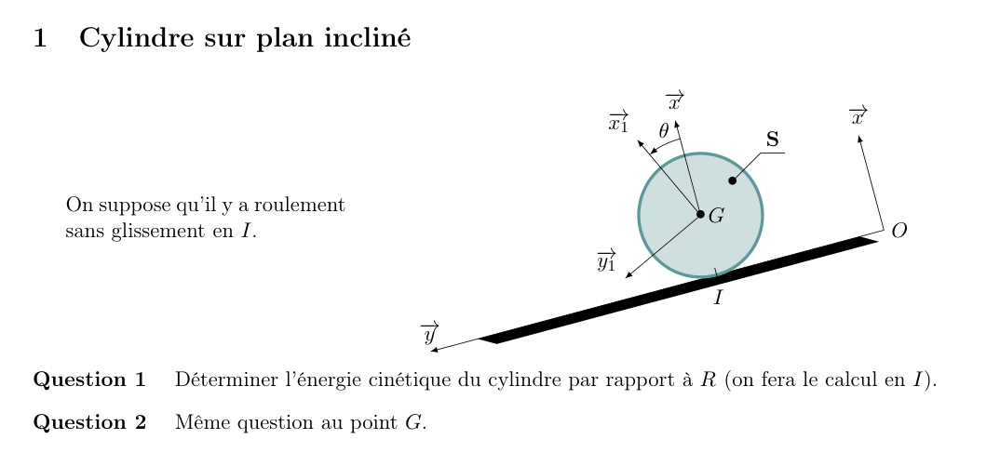
Exercice 1.1 — Cylindre sur plan incliné
Q1Énergie cinétique calculée en \(I\)
Le roulement sans glissement donne \(\vec V_{I\in S/R}=\vec 0\) : le point \(I\) est le centre instantané de rotation. Le comoment en \(I\) se réduit donc à \(2E_c=\vec\Omega_{S/R}\cdot\vec\sigma_{I\in S/R}\).
Avec \(\vec\Omega_{S/R}=\dot\theta\,\vec z\) et \(\vec\sigma_{I}=\bar I_{(G,S)}\cdot\vec\Omega+\vec{IG}\wedge m\vec V_G\), on obtient \(\vec\sigma_{I}=(C+mR^2)\dot\theta\,\vec z\). Pour un cylindre plein, \(C=\tfrac12 mR^2\) : \(\vec\sigma_I=\tfrac32 mR^2\dot\theta\,\vec z\).
Q2Même question en \(G\)
En \(G\) : \(2E_c=m\,V_G^2+\vec\Omega\cdot\vec\sigma_G\) avec \(V_G=R\dot\theta\) et \(\vec\sigma_G=C\dot\theta\,\vec z\) : \(E_c=\tfrac12 mR^2\dot\theta^2+\tfrac12 C\dot\theta^2=\tfrac12 mR^2\dot\theta^2+\tfrac14 mR^2\dot\theta^2\).
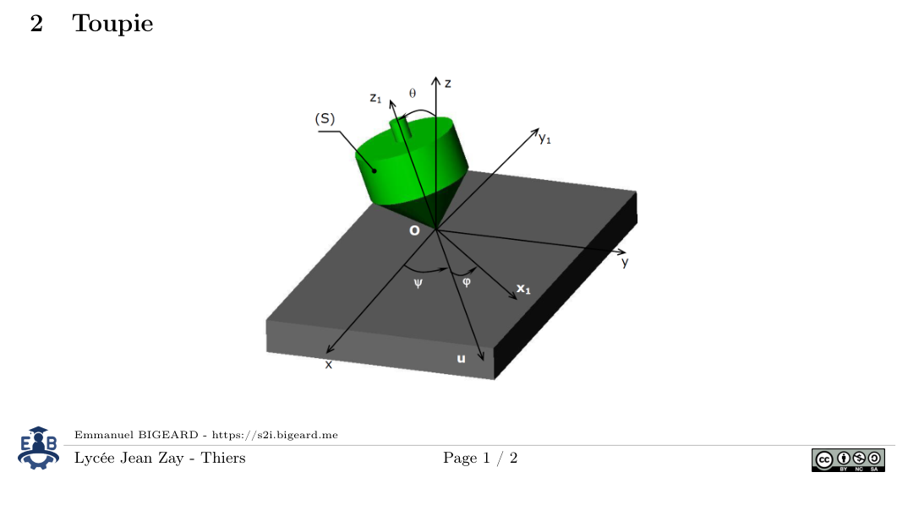
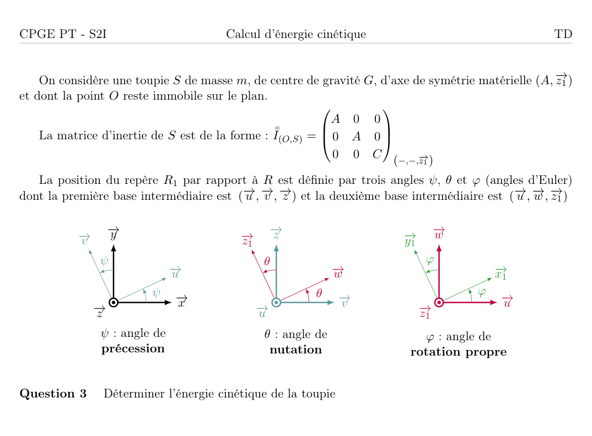
Exercice 1.2 — Toupie
Q3Énergie cinétique de la toupie
Le point \(O\) est fixe : \(V_{O\in S/R}=\vec 0\), donc \(2E_c=\vec\Omega_{S/R}\cdot\bar I_{(O,S)}\cdot\vec\Omega_{S/R}\).
Les angles d'Euler donnent \(\vec\Omega_{S/R}=\dot\psi\,\vec z_0+\dot\theta\,\vec u+\dot\varphi\,\vec z_1\). Dans la base \((\vec x_1,\vec y_1,\vec z_1)\), les composantes sont \(\dot\theta\), \(\dot\psi\sin\theta\) et \(\dot\varphi+\dot\psi\cos\theta\) (la matrice de \(O\) est diagonale, \(A\) étant le moment équatorial et \(C\) le moment autour de l'axe de symétrie).
2. Calcul d'inertie équivalente
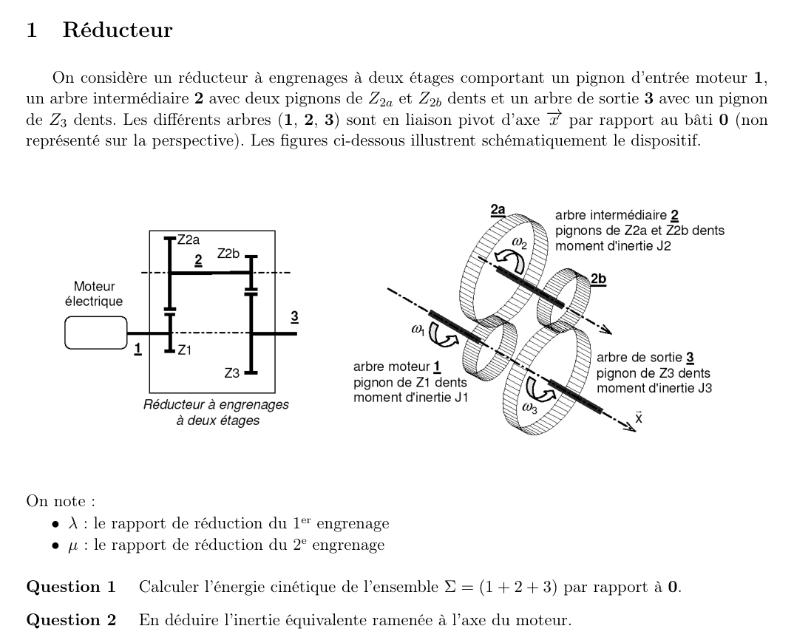
Exercice 2.1 — Réducteur à deux étages
Q1Énergie cinétique de \(\Sigma=\{1+2+3\}\)
Chaque solide tourne autour d'un axe fixe : \(2E_c(S_i/0)=J_i\omega_i^2\), donc \(2E_c(\Sigma/0)=J_1\omega_1^2+J_2\omega_2^2+J_3\omega_3^2\).
Pour un engrenage extérieur, les deux roues tournent en sens contraire : on pose \(\omega_2=-\lambda\,\omega_1\) et \(\omega_3=-\mu\,\omega_2=\lambda\mu\,\omega_1\), avec \(\lambda\) et \(\mu\) positifs (rapports de réduction du prof). Le signe moins n'intervient pas dans l'énergie, puisqu'il est élevé au carré.
Q2Inertie équivalente ramenée à l'axe moteur
Par identification avec \(E_c=\tfrac12 I_{eq}\,\omega_1^2\), chaque inertie est ramenée à l'axe moteur en la multipliant par le carré du rapport de vitesse qui la lie au moteur.
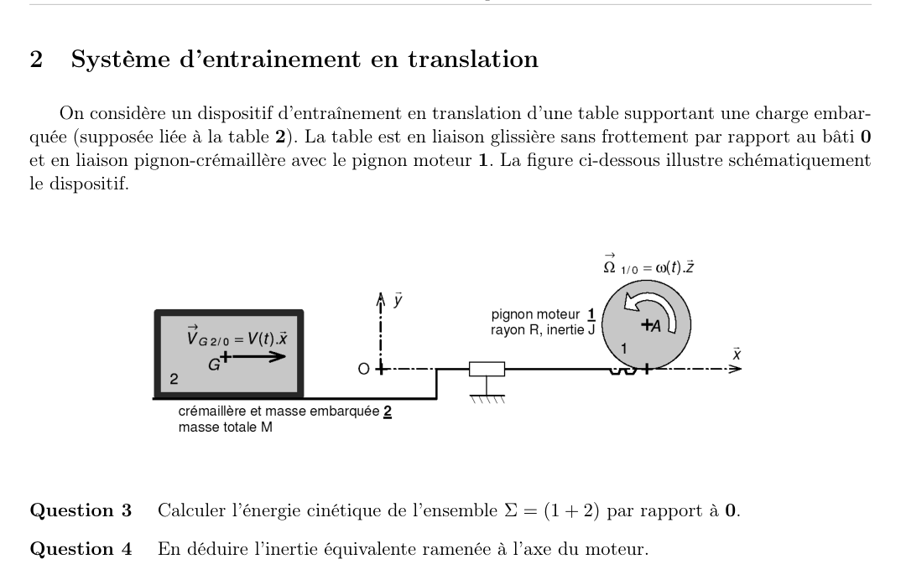
Exercice 2.2 — Système d'entraînement en translation
Q3Énergie cinétique de \(\Sigma=\{1+2\}\)
Le pignon 1 tourne autour d'un axe fixe : \(\tfrac12 J\omega^2\). La table 2 est en translation pure à la vitesse \(v\) : \(\tfrac12 Mv^2\). Pour la liaison pignon–crémaillère sans glissement, \(v=R\omega\).
Q4Inertie équivalente
Une masse \(M\) en translation se ramène à l'axe moteur comme une inertie \(MR^2\), avec \(R\) le rayon primitif du pignon.
3. Calcul de puissance
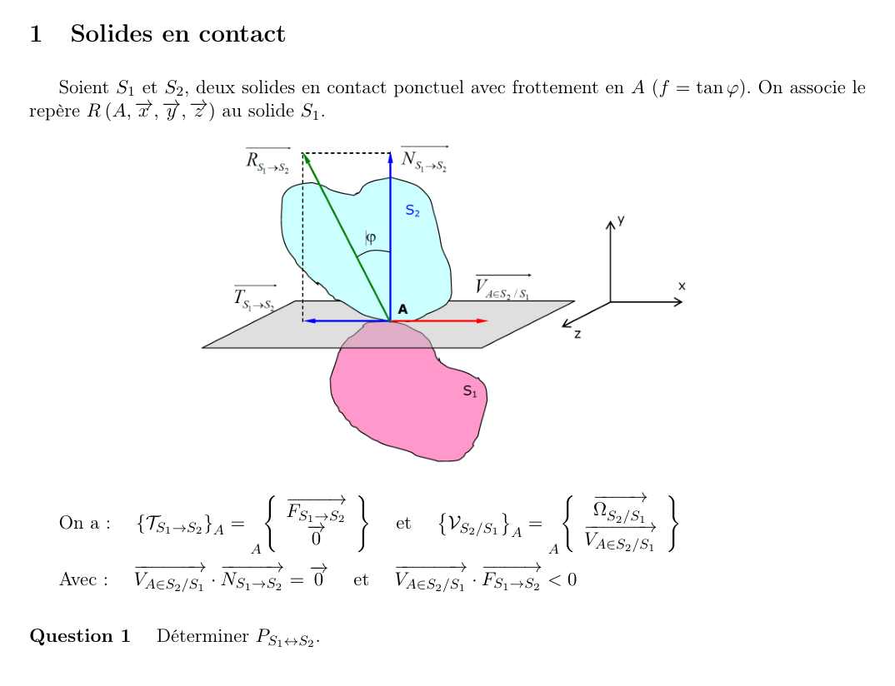
Exercice 3.1 — Solides en contact
Q1Puissance des inter-efforts \(P_{S_1\leftrightarrow S_2}\)
Par définition, \(P_{S_1\leftrightarrow S_2}=\{\mathcal T_{S_1\to S_2}\}\otimes\{\mathcal V_{S_2/S_1}\}\), car le torseur de \(S_2\) sur \(S_1\) travaille à vitesse nulle (\(\{\mathcal V_{S_1/S_1}\}=\{0\}\)). Le moment en \(A\) de \(\{\mathcal T_{S_1\to S_2}\}\) est nul, donc :
\(P=\vec F_{S_1\to S_2}\cdot\vec V_{A\in S_2/S_1}=(\vec N+\vec T)\cdot\vec V_A=\vec T\cdot\vec V_A\), car \(\vec N\cdot\vec V_A=0\).
Le frottement s'oppose au glissement, donc \(\vec T\) et \(\vec V_A\) sont de sens opposés : le produit est négatif.
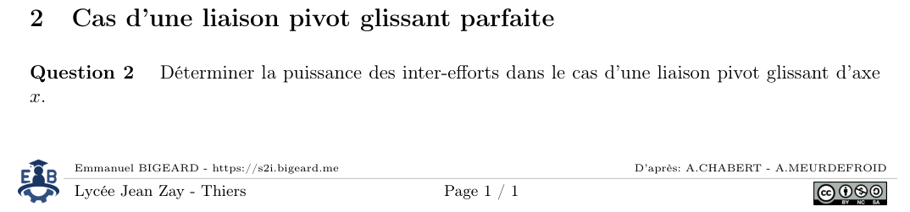
Exercice 3.2 — Cas d'une liaison pivot glissant parfaite
Q2Puissance des inter-efforts
Torseur de la liaison : \(\{\mathcal T_{2\to1}\}_A=\{0,\,Y_A,\,Z_A\,;\,0,\,M_A,\,N_A\}\). Torseur cinématique : \(\{\mathcal V_{1/2}\}_A=\{\omega_x,0,0\,;\,V_x,0,0\}\).
\(P=\vec R\cdot\vec V_A+\vec M_A\cdot\vec\Omega=(0\cdot V_x+Y_A\cdot 0+Z_A\cdot 0)+(0\cdot\omega_x+0+0)=0\).
4. Application du théorème de l'énergie cinétique
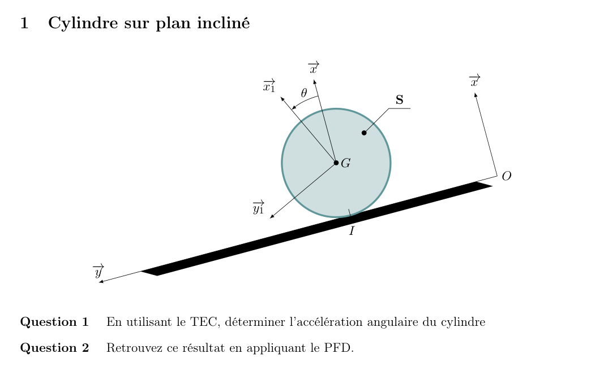
Exercice 4.1 — Cylindre sur plan incliné (TEC puis PFD)
Q1Accélération angulaire par le TEC
Énergie cinétique (exercice 1.1) : \(E_c=\tfrac34 mR^2\dot\theta^2\), donc \(\dfrac{dE_c}{dt}=\tfrac32 mR^2\dot\theta\ddot\theta\).
Puissances extérieures. Le poids : \(P_{pes}=m\vec g\cdot\vec V_G=mg\sin\alpha\,R\dot\theta\) (le cylindre descend). L'action du sol en \(I\) : \(P=0\) car \(\vec V_I=\vec 0\).
TEC : \(\tfrac32 mR^2\dot\theta\ddot\theta=mgR\sin\alpha\,\dot\theta\).
Q2Vérification par le PFD
Torseur dynamique en \(G\) : \(\{\mathcal D\}=\{m\ddot\theta R\,\vec y\,;\,\tfrac12 mR^2\ddot\theta\,\vec z\}\). Torseur de l'action du sol : \(\{\mathcal T_{sol\to S}\}_I=\{N\vec x-fN\vec y\,;\,0\}\) ramené en \(G\), et poids \(\{-mg\vec x\}\) en \(G\).
En projetant dans le plan : \(-mg\cos\alpha+N=0\) ; \(mg\sin\alpha-fN=mR\ddot\theta\) ; moment en \(G\) : \(fNR=\tfrac12 mR^2\ddot\theta\).
On élimine \(f\) : \(R\big(mg\sin\alpha-mR\ddot\theta\big)=\tfrac12 mR^2\ddot\theta\), donc \(\tfrac32 R\ddot\theta=g\sin\alpha\).
Exercice 4.2 — Pendule double
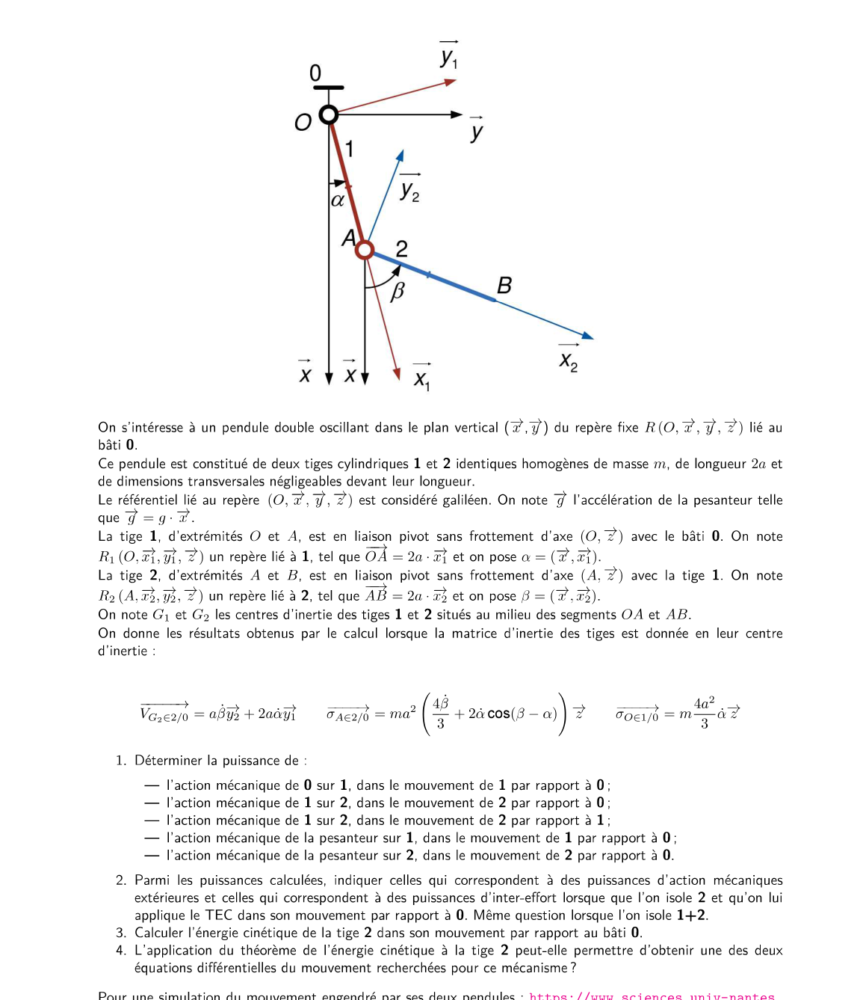
Pas de corrigé dans le dossier Bigeard : correction propre, construite avec les mêmes formules que le TD (\(\vec V_{G_2/0}\), \(\vec\sigma_{A\,2/0}\) et \(\vec\sigma_{O\,1/0}\) donnés dans l'énoncé).
Q1Puissances
- 0 sur 1, mouvement 1/0 : \(P=0\) (pivot parfait en \(O\), \(\vec V_{O\in1/0}=\vec 0\)).
- 1 sur 2, mouvement 2/0 : \(P=\vec R_{1\to2}\cdot\vec V_{A\in2/0}=2a\dot\alpha\,\vec R_{1\to2}\cdot\vec y_1\). Non nul en général : c'est un inter-effort.
- 1 sur 2, mouvement 2/1 : \(P=0\), car \(\vec V_{A\in2/1}=\vec 0\) (pivot parfait).
- 1 sur 2, mouvement 1/0 : \(P=\vec R_{1\to2}\cdot\vec V_{A\in1/0}=2a\dot\alpha\,\vec R_{1\to2}\cdot\vec y_1\), même valeur, car \(\vec V_{A\in2/0}=\vec V_{A\in1/0}\).
- Pesanteur sur 1 : \(P=m\vec g\cdot\vec V_{G_1\in1/0}=mg\,\vec x\cdot a\dot\alpha\,\vec y_1=-mga\dot\alpha\sin\alpha\).
- Pesanteur sur 2 : \(P=m\vec g\cdot\vec V_{G_2\in2/0}=-mga\,(2\dot\alpha\sin\alpha+\dot\beta\sin\beta)\).
Q2Extérieures ou inter-efforts
Isolement de 2 : l'action de 1 sur 2 (mouvement 2/0) et la pesanteur sur 2 sont extérieures à \(\{2\}\). Aucun inter-effort.
Isolement de \(\{1+2\}\) : la liaison 0–1 et la pesanteur sur 1 et 2 sont extérieures. L'action 1 sur 2 et l'action 2 sur 1 forment un inter-effort dont la somme des puissances est nulle (liaisons parfaites).
Q3Énergie cinétique de la tige 2
Par le comoment en \(A\) : \(2E_{c(2/0)}=\vec V_{A\in2/0}\cdot m\vec V_{G_2\in2/0}+\vec\Omega_{2/0}\cdot\vec\sigma_{A\,2/0}\), avec \(\vec V_{A\in2/0}=2a\dot\alpha\,\vec y_1\), \(\vec\Omega_{2/0}=\dot\beta\,\vec z\) et \(\vec\sigma_{A\,2/0}\) donné par l'énoncé.
Q4TEC sur 2 seule, puis sur \(\{1+2\}\)
Sur la tige 2 seule, le TEC fait intervenir la puissance de la liaison 1 sur 2 dans le mouvement 2/0, qui contient les réactions inconnues : il ne donne pas une équation du mouvement sans elles.
Sur \(\{1+2\}\), les inter-efforts se compensent et le TEC donne une équation. Avec \(E_{c(\Sigma)}=ma^2\big(\tfrac83\dot\alpha^2+\tfrac23\dot\beta^2+2\dot\alpha\dot\beta\cos(\beta-\alpha)\big)\) et \(P_{pes1}+P_{pes2}=-mga(3\dot\alpha\sin\alpha+\dot\beta\sin\beta)\) :
Une seule équation scalaire sort du TEC. La seconde demande un PFD sur une des tiges : je ne l'ai pas rédigée.
5. Étude de cas
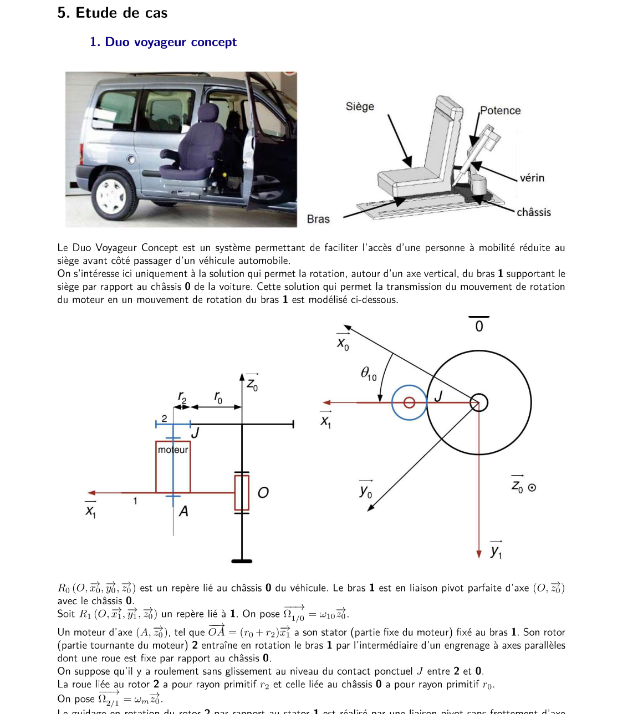
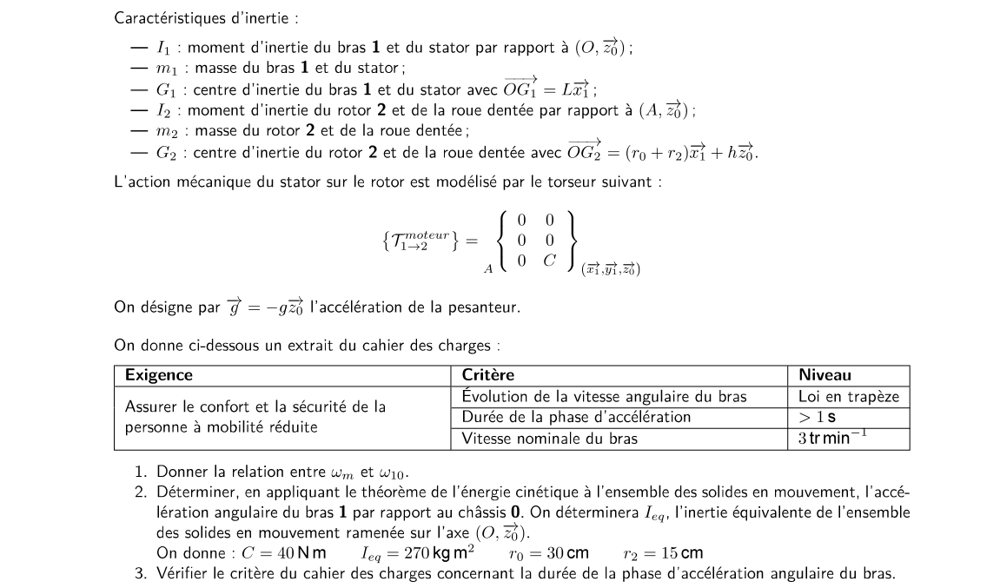
Exercice 5.1 — Duo Voyageur Concept
Pas de corrigé dans le dossier Bigeard : correction propre. Données de l'énoncé : \(C=40\ \text{N·m}\), \(I_{eq}=270\ \text{kg·m}^2\), \(r_0=30\ \text{cm}\), \(r_2=15\ \text{cm}\).
Q1Relation entre \(\omega_m\) et \(\omega_{10}\)
Le centre \(A\) du rotor décrit un cercle de rayon \(r_0+r_2\) autour de \(O\) : \(V_{A\in2/0}=(r_0+r_2)\,\omega_{10}\). Le rotor 2 roule sans glisser en \(J\) sur la roue fixe, donc \(\vec V_{J\in2/0}=\vec 0\), ce qui donne \(\omega_{20}\,r_2=(r_0+r_2)\,\omega_{10}\).
Le moteur donne \(\omega_m=\omega_{21}=\omega_{20}-\omega_{10}\), d'où \(\omega_m=\dfrac{r_0}{r_2}\,\omega_{10}\).
Q2Accélération angulaire du bras, par le TEC
Énergie cinétique de l'ensemble en mouvement ramené à l'axe \((O,\vec z_0)\) : \(E_c=\tfrac12 I_{eq}\,\omega_{10}^2\). Seul le couple moteur travaille (frottements négligés) : \(\dfrac{d}{dt}\big(\tfrac12 I_{eq}\omega_{10}^2\big)=C\,\omega_{10}\), soit \(I_{eq}\dot\omega_{10}=C\).
Q3Critère de durée de la phase d'accélération
Vitesse nominale : \(\omega_{nom}=3\ \text{tr/min}=\dfrac{2\pi\cdot3}{60}\approx0{,}314\ \text{rad/s}\). Accélération constante : \(t=\dfrac{\omega_{nom}}{\dot\omega_{10}}\approx\dfrac{0{,}314}{0{,}148}\approx 2{,}1\ \text{s}\).
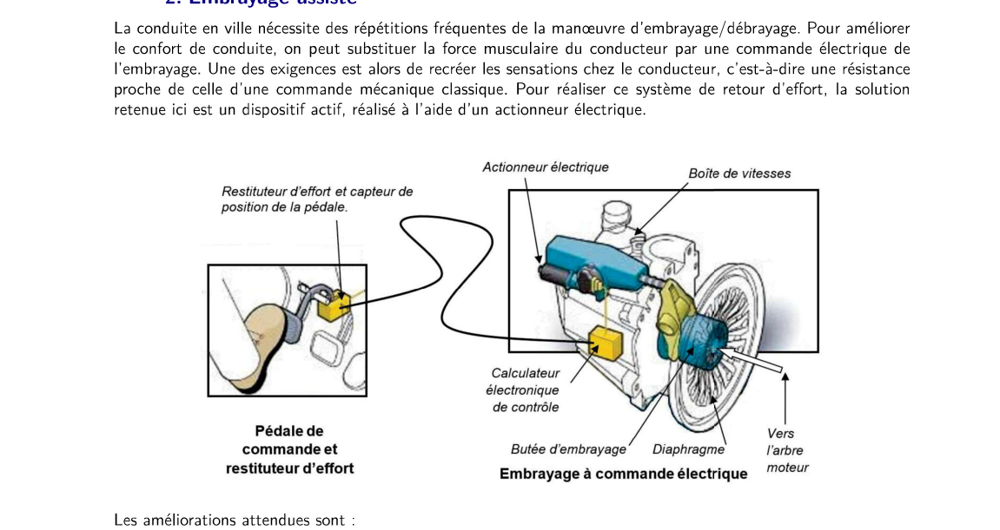
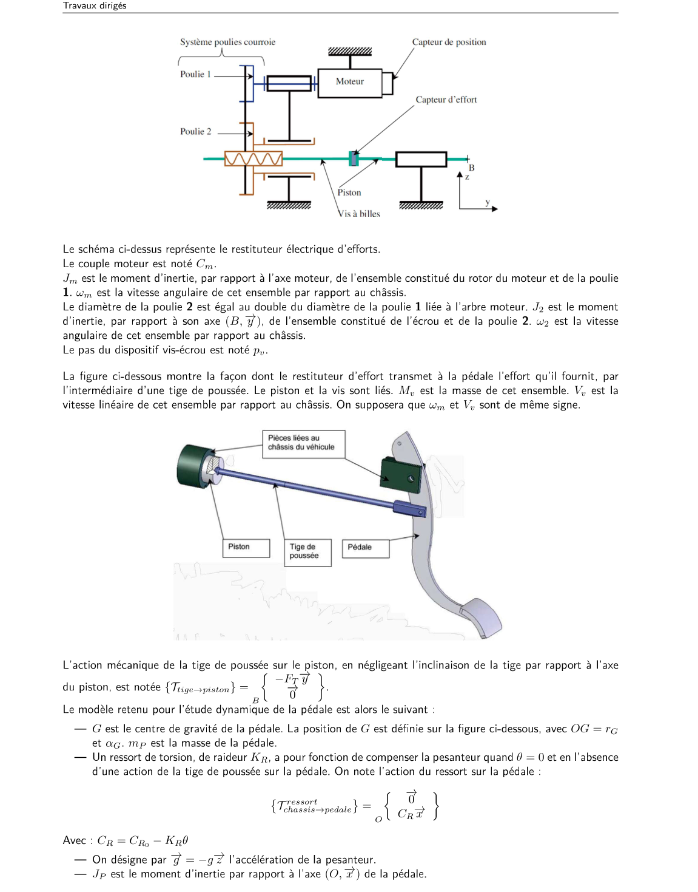
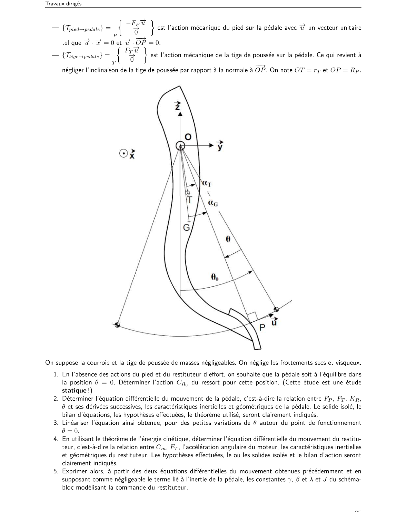
Exercice 5.2 — Embrayage assisté (restituteur d'effort)
Pas de corrigé dans le dossier Bigeard (le fichier « embrayage » porte sur un autre exercice, avec frottement entre disques). Correction propre. La géométrie de la pédale est lue sur la figure du TD : à confirmer.
Q1Couple du ressort en \(\theta=0\)
Étude statique, sans action du pied (\(F_P=0\)) ni du restituteur (\(F_T=0\)) : le ressort compense le moment du poids. En notant \(\alpha_G\) l'angle de \(\overrightarrow{OG}\) avec la verticale à \(\theta=0\), le poids a pour moment \(m_Pg\,r_G\sin\alpha_G\).
Q2Équation de la pédale
Les deux forces agissent selon \(\vec u\), perpendiculaire à \(\overrightarrow{OP}\) : le pied (\(-F_P\vec u\) en \(P\), bras \(R_P\)) et la tige (\(F_T\vec u\), bras \(r_T\) par la vitesse de la tige, cf. Q5). Moment en \(O\) du ressort \(C_{R_0}-K_R\theta\) et du poids \(-m_Pg\,r_G\sin(\alpha_G+\theta)\) :
Convention : \(\theta\) croît quand la tige pousse la pédale. À confirmer avec la figure.
Q3Linéarisation autour de \(\theta=0\)
Avec \(C_{R_0}=m_Pgr_G\sin\alpha_G\) et \(\sin(\alpha_G+\theta)\approx\sin\alpha_G+\theta\cos\alpha_G\), les termes constants se compensent :
Q4TEC appliqué au restituteur
Hypothèses : poulie 2 de diamètre double de la poulie 1, donc \(\omega_2=\omega_m/2\) (même vitesse de courroie). Pas \(p_v\) par tour de vis : \(V_p=\dfrac{p_v}{2\pi}\omega_2=\dfrac{p_v}{4\pi}\omega_m\). On pose \(\lambda=\dfrac{p_v}{4\pi}\), donc \(V_p=\lambda\omega_m\). Frottements négligés.
Énergie cinétique : \(E_c=\tfrac12 J_m\omega_m^2+\tfrac12 J_2\omega_2^2+\tfrac12 M_pV_p^2=\tfrac12 J_{eq}\omega_m^2\), avec \(J_{eq}=J_m+\dfrac{J_2}{4}+M_p\lambda^2\).
Puissances : moteur \(C_m\omega_m\) ; tige sur le piston \(\{-F_T\vec y\}\) avec \(\vec V_{piston}=V_p\vec y\), soit \(-F_T\lambda\omega_m\). Le TEC donne \(J_{eq}\,\omega_m\dot\omega_m=C_m\omega_m-\lambda F_T\omega_m\).
Q5Constantes \(\gamma\), \(\beta\), \(\lambda\), \(J\) et schéma-bloc
Pédale sans inertie (\(J_P\) négligé, comme le demande l'énoncé) : \(r_TF_T=R_PF_P+K\theta\), soit \(F_T=\gamma F_P+\beta\theta\) avec :
Cinématique : la tige déplace le piston de \(x=r_T\,\theta\) (égalité des puissances : \(r_TF_T\,\dot\theta=F_T\dot x\)). Le moteur donne \(x=\lambda\,\theta_m\) ; donc \(\theta=\alpha\,\theta_m\) avec \(\alpha=\dfrac{\lambda}{r_T}\).
En Laplace (\(\Omega_m=p\,\Theta_m\), \(\Theta=\alpha\Theta_m\)) : \(J\,p\,\Omega_m=C_m-\lambda(\gamma F_P+\beta\Theta)\). C'est le schéma-bloc du TD (p. 36) : boucle électrique \(U\to\dfrac{1}{R+Lp}\to K_C\to C_m\) avec retour \(K_e\Omega_m\), puis \(\dfrac{1}{Jp}\), \(\dfrac{1}{p}\), \(\alpha\), et retour \(\beta\Theta\) vers \(F_T\).
En éliminant \(\theta_m\) : \(\dfrac{J\,r_T}{\lambda}\,\ddot\theta+\lambda\beta\,\theta=C_m-\lambda\gamma F_P\).